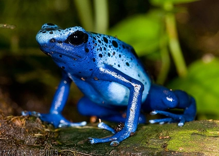

RANA - VENENO AZUL

La rana flecha azul o dendrobates azureus pertenece a la familia de los dendrobatidae, anfibios diurnos que viven en zonas selváticas. Presentan coloraciones únicas y vibrantes que indican a quiénes se encuentran su alto nivel de toxicidad.Aunque su nombre es rana flecha azul, esta puede presentar diferentes tonalidades que varíen entre azul-ligero a azulado-púrpura oscuro incluyendo además manchas negras. Cada individuo es diferente y único. Se trata de una rana muy pequeña que mide entre 40 y 50 mm de longitud, se diferencia el macho de la hembra por ser este más pequeño, delgado y cantar en la etapa adulta. Los colores que muestra son un aviso del veneno mortal para muchos animales, incluso para los humanos.
- Se trata de ranas terrestres aunque disfrutan estando cerca del agua para chapotear.
- A los 14 - 18 meses de vida, la rana flecha azul alcanza la madurez sexual y se empiezan a evidenciar los cortejos, nada tímidos.
- Las ranas flecha azul son principalmente insectívoras y por ese motivo se alimentan de insectos como hormigas, moscas y orugas.
- Anteriormente se pensaba que el nombre de rana de flecha azul provenía de los indios que las utilizaban para envenenar a sus enemigos mediante las flechas. Actualmente sabemos que los dardos se envenenaban con Phyllobates Terribilis, Phyllobates bicolor y Phyllobates aurotaenia.
- Pesa aproxim. 3 g
MENU